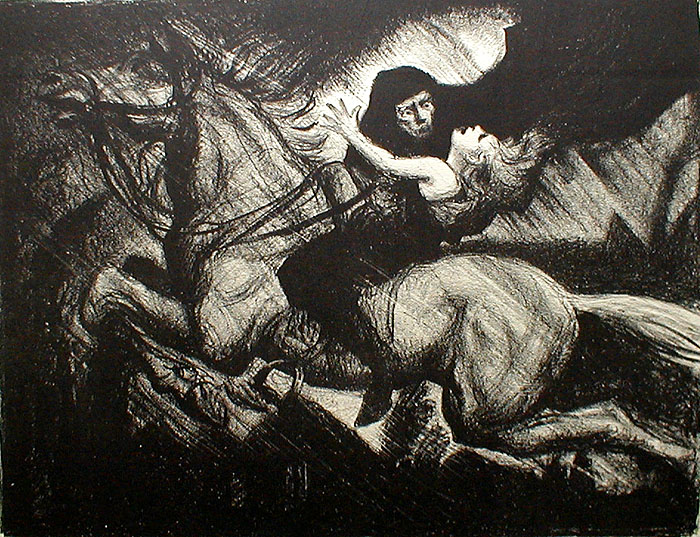

Ojciec

Ojciec w balladzie "Król Elfów" nie wierzy swojemu synowi kiedy ten opowiada mu o tym jak Król
Elfów do niego nawołuje. Można powiedzieć że w przeciwieństwie do syna należy on do świata realnego.
Uspokaja on swojego syna a gdy zaczyna sie niebezpieczeństwo popędza on konia.